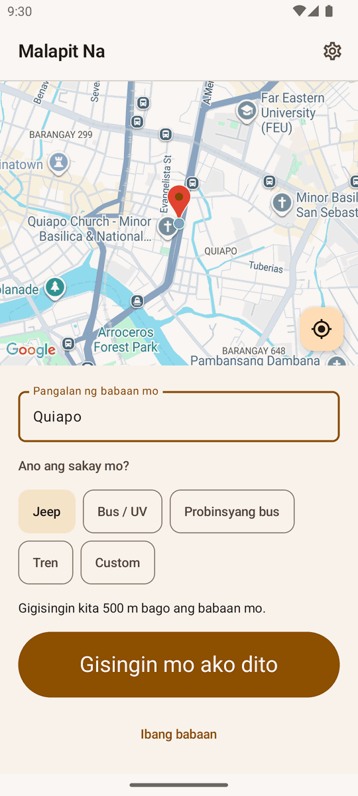
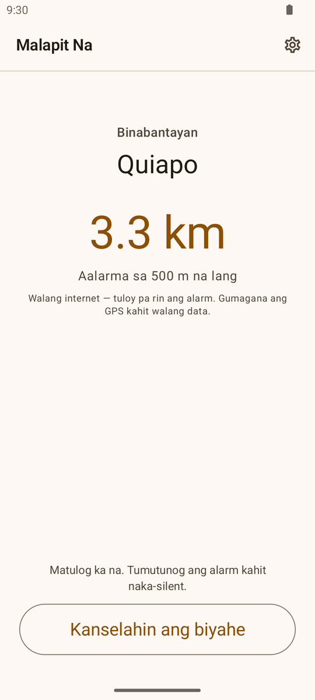

I-pin ang babaan mo
Igalaw ang mapa hanggang nasa babaan mo ang pin, o i-tap ang babaang na-save mo dati.
I-pin kung saan ka bababa, tapos pikit na. Binabantayan ng Malapit Na ang layo at gigisingin ka mga 500 m bago ang babaan mo—kahit naka-lock ang screen.

Igalaw ang mapa hanggang nasa babaan mo ang pin, o i-tap ang babaang na-save mo dati.
Jeep, bus, UV Express, probinsyang bus, o tren—bawat isa may sariling layo kung kailan tutunog ang alarm.
Matulog, mag-scroll, o tumanaw sa labas. Tumutunog ang alarm kahit naka-lock ang screen at naka-silent.
Hindi internet ang GPS. Kaya ng phone mong hanapin kung nasaan ka kahit walang kahit isang kilobyte ng data, kaya tuloy ang countdown ng alarm sa tunnel, sa dead spot, at kahit ubos na ang load mo.
Alarm sa babaan ang Malapit Na para sa mga sumasakay ng jeep, city bus, UV Express, probinsyang bus, at tren. Libre ito sa Android. Itakda ang babaan mo bago ka umupo, at patuloy nitong babantayan ang layo habang naka-lock ang screen—para hindi mo malampasan ang babaan mo sa mahabang traffic sa EDSA o sa probinsyang bus nang alas-tres ng madaling araw.



Hindi umaalis sa phone mo ang lokasyon mo. Nananatili sa device ang aktibong biyahe, mga saved na babaan, settings, at ride history. Walang Malapit Na account, walang ads, at walang Fri Vei As analytics o backend.
Basahin ang privacy policy →Every section on this page exists in English as well—and so does the app itself. Just pick the language in Settings.
Read in English →

Libre sa Google Play. Walang ads, walang account—ang babaan mo lang ang puwede mong malampasan.